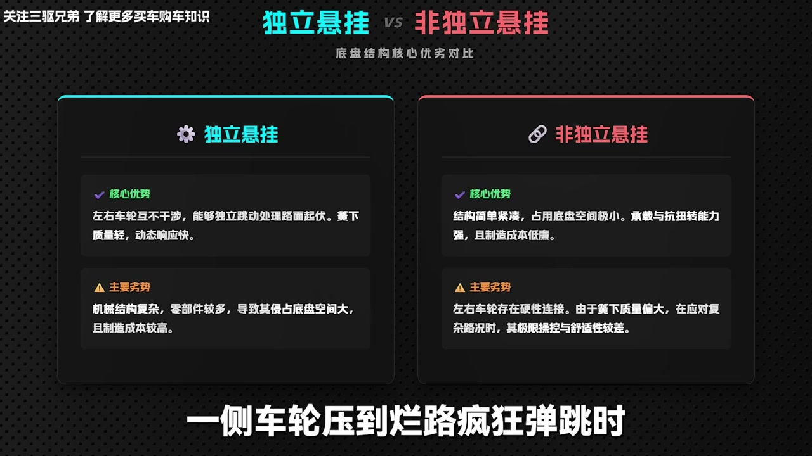
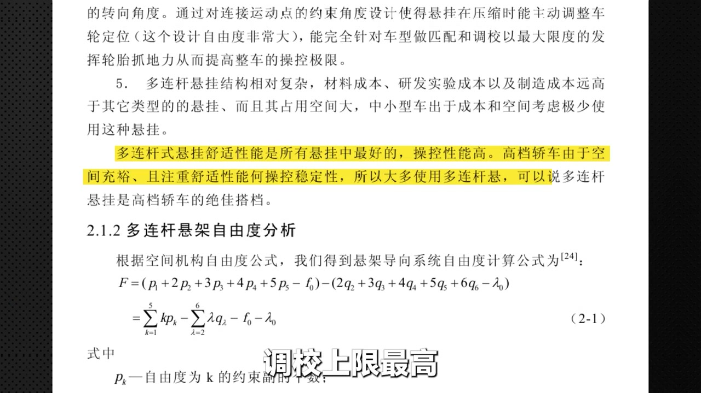
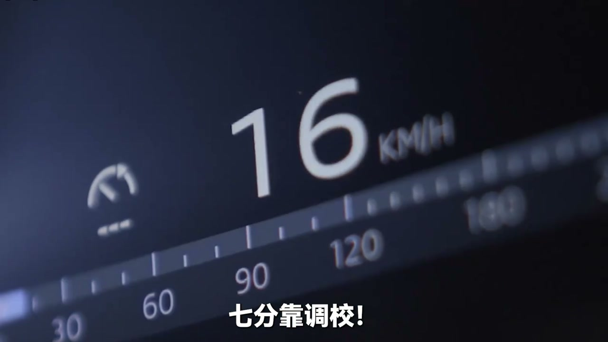
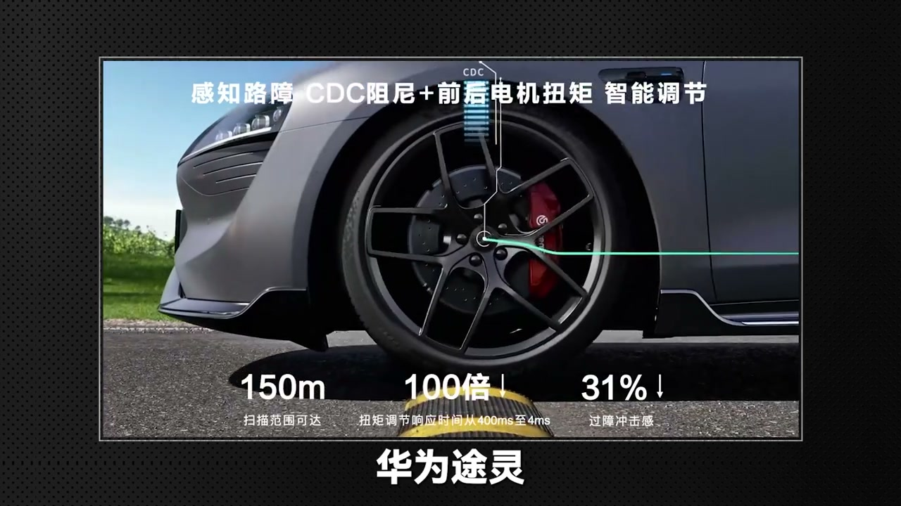
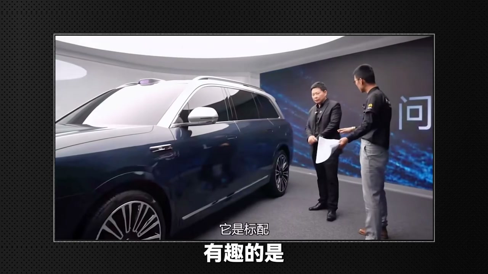

01
中文
高速狂飙时撑住身家性命的，是四个轮胎接触面和底盘悬挂。
EN
At speed, your life rests on four tire patches and the suspension.
表达提示tire patch（轮胎接触面）

Scene English · 汽车 · 底盘悬挂
Understand Suspension in One Video
🎧 语音讲解
Suspension's First Job: Safety
情境120时速下撑住性命的只有四个轮胎接触面和底盘悬挂；悬挂第一要义是死死按住轮胎让轮胎贴合地面。
高速狂飙时撑住身家性命的，是四个轮胎接触面和底盘悬挂。
At speed, your life rests on four tire patches and the suspension.
表达提示tire patch（轮胎接触面）
悬挂的第一要义是保命，它必须死死按住轮胎贴合地面。
Suspension's first duty is safety—keeping the tires glued to the road.
表达提示glued to the road（贴合地面）
如果轮胎离地，抓地力瞬间归零，汽车分分钟打滑失控。
Lift a tire and grip hits zero—the car loses control in a flash.
表达提示lose grip（失去抓地力）
底盘是汽车三大件之一，悬挂则归属于底盘系统。
The chassis is one of the big three; suspension is its core subsystem.
表达提示chassis（底盘）
tire patch（轮胎接触面
glued to the road（贴合地面

Independent vs. Beam Axle
情境悬挂分两大派系：独立和非独立。独立悬挂左右轮互不干涉，非独立悬挂两个车轮装在同一根梁上跟着一起动。
悬挂整体分两大派系：独立和非独立。
Suspension splits into independent and non-independent types.
表达提示independent suspension（独立悬挂）
独立悬挂左右轮相互独立、互不干涉。
Independent suspension keeps left and right wheels independent.
表达提示independent wheels（左右独立）
非独立悬挂像同一条绳上的蚂蚱，两个车轮按在同一根梁上。
Beam-axle suspension ties both wheels to one rigid beam.
表达提示beam axle（非独立梁式）
大多数家用车前轮需要转向，基本采用独立悬挂。
Because front wheels steer, most cars use independent front suspension.
表达提示front steering（前轮转向）
independent wheels（左右独立
beam axle（非独立梁式

MacPherson and Double Wishbone
情境麦弗逊结构最简单省钱省空间，但极限工况侧倾点头明显；双叉臂用上下两把叉子分工协作，操控好但造价高。
麦弗逊结构最为简单，仅由一根减震支柱和下摆臂构成。
MacPherson strut is simplest—one strut and a lower arm.
表达提示MacPherson strut（麦弗逊）
麦弗逊的支柱不仅要扛车身重量，过弯时还得顶住横向撕扯力。
Its strut bears the body weight and lateral loads in corners.
表达提示lateral load（横向力）
一旦逼近操控极限，麦弗逊会暴露出侧向支撑不足、点头明显的问题。
Near the limit, MacPherson shows body roll and brake dive.
表达提示body roll（侧倾）
双叉臂通过上下两把叉子死死嵌入车轮，有效分担侧向力。
Double wishbones clamp the wheel top and bottom, sharing lateral loads.
表达提示double wishbone（双叉臂）
双叉臂操控精准，F1赛车也用，但造价高且侵占发动机舱空间。
Precise and F1-proven, wishbones cost more and eat engine-bay space.
表达提示engine bay（发动机舱）
MacPherson strut（麦弗逊
lateral load（横向力

Multi-Link and 'Chopstick' Links
情境多连杆把上下两把叉子拆解成3-5根独立连杆，调教自由度最高；但连杆数量可以缩水，三根细杆就是筷子悬架。
多连杆本质是把上下两把叉子打散，拆解成3到5根独立的连杆。
Multi-link splits the wishbones into 3–5 independent arms.
表达提示multi-link（多连杆）
每个连接点都有橡胶衬套做缓冲，自带滤震功底。
Rubber bushings at each joint absorb vibration.
表达提示rubber bushing（橡胶衬套）
这种精细化分工给车厂极高的调教自由度。
Fine-grained control gives engineers huge tuning freedom.
表达提示tuning freedom（调教自由度）
注意别被缩水多连杆骗了：三根细杆的筷子悬架，动态表现天差地别。
Beware watered-down 'multi-link'—thin chopstick arms behave far worse.
表达提示chopstick links（筷子悬架）
multi-link（多连杆
rubber bushing（橡胶衬套

Even a Torsion Beam Can Feel Great
情境扭力梁几乎不占底盘空间，经济型家轿最爱；底盘三分靠堆料七分靠调教，法系车能把扭力梁调出贴地飞行质感。
扭力梁更像一根柔韧的扁担，能吸收不少路面震动。
A torsion beam flexes like a springy bar, absorbing road shock.
表达提示torsion beam（扭力梁）
扭力梁最大优势是几乎不占底盘空间，把空间让给后排和后备箱。
Its biggest win: it barely eats floor space, freeing room for seats and trunk.
表达提示floor space（底盘空间）
网上说前麦弗逊后扭力梁最垃圾，这话对但也不对。
The 'torsion beam is worst' claim is true and false at once.
表达提示partly true（对也不对）
底盘三分靠堆料、七分靠调教，法系车能把扭力梁调出贴地飞行质感。
Chassis is 30% hardware, 70% tuning—French makers work wonders on beams.
表达提示70% tuning（七分调教）
torsion beam（扭力梁
floor space（底盘空间

Spotting Chassis Quality at a Glance
情境静态看底盘平整度和护板，带磁铁吸摆臂判断钢或铝合金，中高端车留意有没有完整的前后全框式副车架。
静态观察底盘平整度，好底盘通常有大面积护板。
Check the underbody: good chassis have large protective covers.
表达提示protective covers（护板）
带一块磁铁往摆臂上一吸，吸住是钢，吸不住大概率是铝合金。
A magnet on the arm: sticks = steel, falls = aluminum.
表达提示magnet test（磁铁测试）
铝合金比钢材轻30%到40%，能大幅降低簧下质量。
Aluminum is 30-40% lighter, sharply cutting unsprung mass.
表达提示unsprung mass（簧下质量）
留意有没有完整的前后全框式副车架，它像给底盘加装金属外骨架。
Look for full front and rear subframes—a metal exoskeleton for the chassis.
表达提示subframe（副车架）
protective covers（护板
magnet test（磁铁测试

Why Air Suspension Took Over
情境电车大电池包整车两三吨，螺旋弹簧要么过软支撑不住要么过硬太颠，空气悬挂能根据载荷自动调气压解决矛盾。
国产电车卷空气悬挂，不是做慈善，而是被电车物理特性逼出来的。
EV makers adopt air suspension out of physics, not charity.
表达提示forced by physics（物理所迫）
大电池包让整车重量轻松突破两三吨，传统螺旋弹簧有点不够用。
Huge battery packs push weight past two tons—coil springs struggle.
表达提示battery pack（电池包）
弹簧调太软过弯撑不住，调太硬日常太颠。
Coils too soft bottom out in corners; too hard rides harshly.
表达提示bottom out（托底）
空气悬挂根据载重自动调节气压，还能更细致过滤颠簸保护电池。
Air suspension adjusts pressure by load and filters bumps to protect the pack.
表达提示air suspension（空气悬挂）
forced by physics（物理所迫
battery pack（电池包

Active Suspension and the Final Test
情境全主动悬挂带独立动力源，过坑前主动把轮子顶回去，理论上完全隔离震动；但终极判断永远是线下试驾。
全主动悬挂拥有独立动力源，用电磁电机带轮胎避震器。
Fully active suspension has its own power source—electric motors on each damper.
表达提示active suspension（全主动悬挂）
过坑时在轮子还没掉下去前，就主动施加方向相反的力把轮子顶回去。
Before the wheel drops, it pushes back with an opposing force.
表达提示push back（顶回去）
真正做到刹车不点头、过弯不侧倾，舒适操控两手抓。
No brake dive, no body roll—comfort and handling together.
表达提示no brake dive（刹车不点头）
但评判底盘好坏的终极杀招，永远是线下试驾。
Still, the ultimate chassis test is a real test drive.
表达提示test drive（试驾）
active suspension（全主动悬挂
push back（顶回去
说悬挂第一要义
说两大派系
说麦弗逊双叉臂
说多连杆
说磁铁测试
说空悬为何流行
底盘七分靠调教。
太软反而晕车。
当心筷子悬架。
空悬维护成本高。
终极判断是试驾。